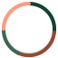
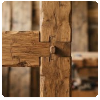
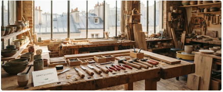

audit de circularité & dialogue ouvert
Notre Empreinte positive & Parlons-en
Mesurer notre impact tangible, certifier chaque gramme détourné des déchargeset co-construire l'artisanat régénératif de demain.
MISE À JOUR CERTIFIÉE
T1 2025 · Norme ADEME
+34% vs 2024
18450 kg
Rebuts nobles valorisés
Chutes d'ateliers, bois de charpente etrebuts industriels recyclés.
Évitement direct
32,8t co2e
Émissions évitées
Comparé à la production industrielle d'équivalents neufs non-circulaires.
Filière sèche
142000 L
eau portable préservée
Procédés de décapage et teinture végétale à circuit fermé
Social & Inclusion
820 hrs
Transmission & Ateliers
Apprentissage de la réparation, du surcylage et insertion locale
TYPOLOGIE DES FLUX
Répartition par Matière Surcylée
100%
Revalarisé
chaque flux de déchet est répertorié par son origine d'extraction géilocalisée (dans un rayon moyen de 48 km autour des ateliers régionaux).
Bois massif de réemploi & chene sauvé
40%
Lin & toiles de coton upcyclés
25%
Verre calcin soufflé artisanal
20%
Plastique techniques thermo-pressés
15%

Cycle Neutre Matière
Zéro transport aérien, collage bio-surcé sans solvant volatile
AUDIT INDEPENDANT
Méthodologie de calcul Eco-Index
Tous nos indicateurs sont audités semestriellement selon les règles de l'Anzlyse de Cycle de Vie (ACV) du berceau au réemploi
Norme ISO pour le bilan matière
Certification Ateliers d'Art de Frence
Index Eco-responsabilité numérique : 94/100

TRACABILITE MATIERE
Le carnet d'identité de l'objet
chaque création EcoArt est frappée d'un numéro de lot mentionnant son site d'extraction d'origine
PROXIMITE & RENCONTRE
Atelier Central & Pole Créatif
Venez toucher les matières, échanger avec les maitres artisans ou déposer vos gisements réemployables .
Adresse de l'Atelier
42 Rue des Fondeurs Circulaires 75011 Paris, France
Ligne Directe & Courriel
+33 (0)1 89 45 20 10
contact@ecoart-artisans.fr
Horaires de Visite & Dépot
Mardi au samedi : 09h00 -- 18h30
Dimanche & Lundi : Réservé aux chantiers d'uncycling
Mobilité Douce Recommandée
Métro Ligne9 (Charonne) à 200m . station Vélib' #11028 devant la cour pavée . Station de recharge pour vélos cargo disponible sur place

La Manufacture EcoArt, espace collaboratif et recyclerie ouverte.
ECRIVEZ-NOUS
Initier un Echange ou un Projet
Que vous soyez un particulier en quete d'une pièce sur-mesure, une entreprise pour vos cadeaux d'affaires RSE ou un artisan cherchant à rejoindre la coopérative.
Réponse artisanale sous 24h ouvrées
Réseau des 14 Ateliers Partenaires
En plus du tiers-lieu parisien, nos ateliers de forge, verrerie soaire et tissage se déploient en Nouvelle-Aquitaine, Auvergne-Rhone-Alpes et Bretagne .
Découvrir la carte complète des artisans >FOIRE AUX QUESTINS